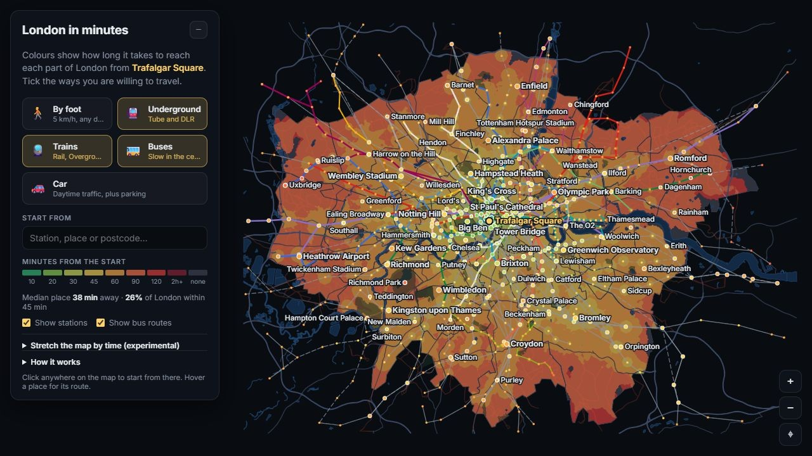

Interactive atlas
Interactive atlas
Data visualisation
Export Atlas
Explore the geography of global trade. Compare countries, goods and services, and see how export markets change over time.
Artem Skulimovskiy / London, UK
I build software that turns complex problems into useful tools — from production compute platforms to agent systems and interactive applications.
01 / Selected work
Interactive atlas
Data visualisation
Explore the geography of global trade. Compare countries, goods and services, and see how export markets change over time.
 Agent systems
Agent systems
AI & orchestration
A serial-fiction engine that coordinates specialised agents across planning, drafting, continuity, and revision, with persistent state and manuscript history.

Interactive mapMaps & modelling
A different way to see the city: by travel time. Explore approximate journeys across walking, rail, buses, and driving on an interactive map.
 Windows application
Windows application
Desktop & graphics
A CRT virtual monitor for real Windows apps. Phosphor pixels, scanlines, glow, and curved glass bring an old display language to modern software.
Human–agent interaction
An MCP server that gives coding agents interactive forms, sliders, diffs, and live previews for working with people.
Generative models
Navigate generative images with words and WASD. An experiment in steering through semantic directions in latent space.
02 / Published on Android
Educational quiz apps I design and publish, exploring language and history.
Learn the Greek alphabet through symbol recognition and alphabet-order quizzes.
 View on Google Play
View on Google Play Identify historical armour through images, descriptions, and the periods it belongs to.
 View on Google Play
View on Google Play Put a name to the portrait and explore the emperors and dynasties of ancient Rome.
 View on Google Play
View on Google Play 03 / Background & toolkit
I’m a London-based software engineer with a background in quantitative computing and an interest in how complex systems behave.
At SimCorp, I work on backend infrastructure and distributed compute. Previously, I worked at Eigen Technologies and JPMorgan, and founded an education startup.
I hold an MEng in Computer Science from UCL, where I specialised in AI. Today, my interests include agent orchestration, persistent state, and evaluation methods for complex systems.
I use AI coding agents throughout development, from planning and implementation to debugging and testing. Architecture, technical judgement, and validation remain central to how I work.
Follow my work on GitHub